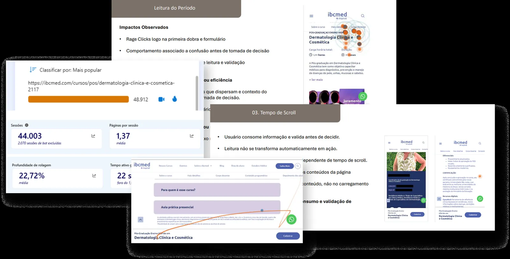
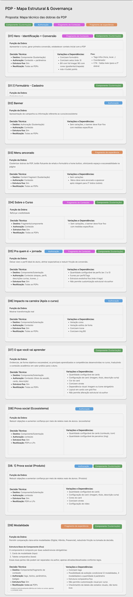
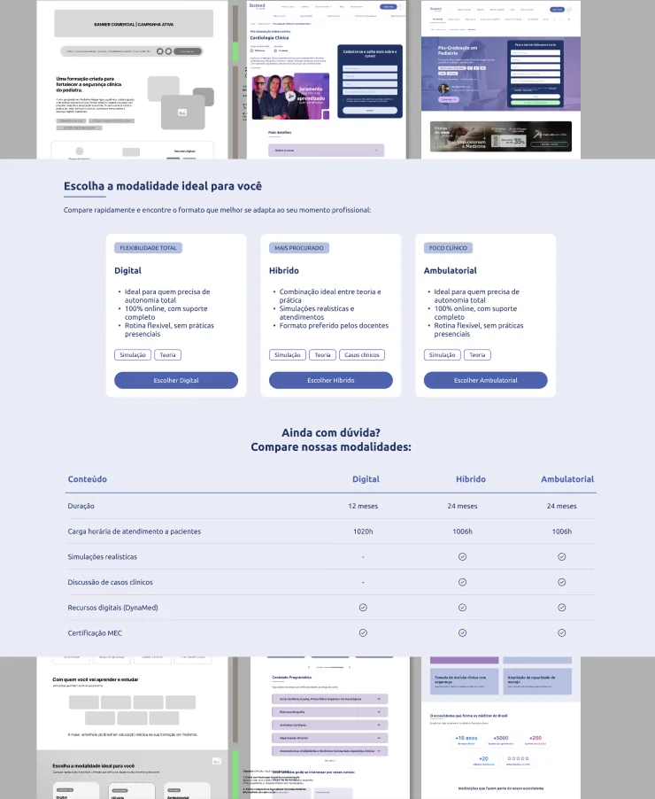

THE PROBLEM
WASN'T THE CTA.
Behavioral diagnosis via Microsoft Clarity and a restructuring of IBCMED's PDP, from discovery to handoff with product and technology.
Context
The journey's decision page.
The PDP was where the user assessed value, reduced risk and sought clarity before submitting the interest form. The existing structure was generic: different course formats generated separate pages and essential information was buried inside a sequence of accordions.
Problem
Relevant traffic. Conversion that didn't match it.
Before redesigning, the priority was understanding actual behavior. The initial hypothesis pointed at the CTA, but the data showed a different problem.
My role
From behavior to handoff.
- 90-day analysis in Microsoft Clarity, separating mobile and desktop.
- Diagnosis of scroll, clicks, rage clicks, dead clicks and recurring patterns.
- Discovery, objection map and user flow for the new PDP.
- Handoff and follow-through with Product and Technology.
- Implementation of part of the changes directly in AEM.
Evidence
Validation and action are different behaviors.
Scroll and reading were treated as micro-conversions. That revealed two recurring patterns:
Already decided
Goes straight to the form and converts early. The site executes a decision that, for the most part, had already been made.
Still validating
Reads more, scans the page and looks for information like target audience, practical classes and faculty before deciding.
The opportunity was guiding the second profile from "I get it" to "I want to do this."

Decisions
The redesign came out of the diagnosis.
Decision driven by behavioral evidence.
Fewer pages, a cleaner showcase and simpler maintenance.
Direct, scannable content to support validation.
Explicitly guide validation → action.
Measure reading and scroll, not only the form.
Governance and reuse across courses.

Deliverables
From insight to something operable.
- Prioritized behavioral analysis.
- Objection map and user flow.
- Final structure for the new PDP.
- Component governance map.
- Handoff with Product and Technology.
- Partial implementation in AEM.
Impact
From "the CTA doesn't convert" to the right problem.
The redesign became evidence-driven, consolidated the formats into a single structure and turned the PDP into a reusable component system. The proposal was approved by leadership and reached production.

Learning
The value wasn't in redesigning a screen.
The main learning was translating behavior into a product decision: understanding the journey before changing the interface avoided optimizing the wrong element and created a solution that was more governable for product, content and technology.